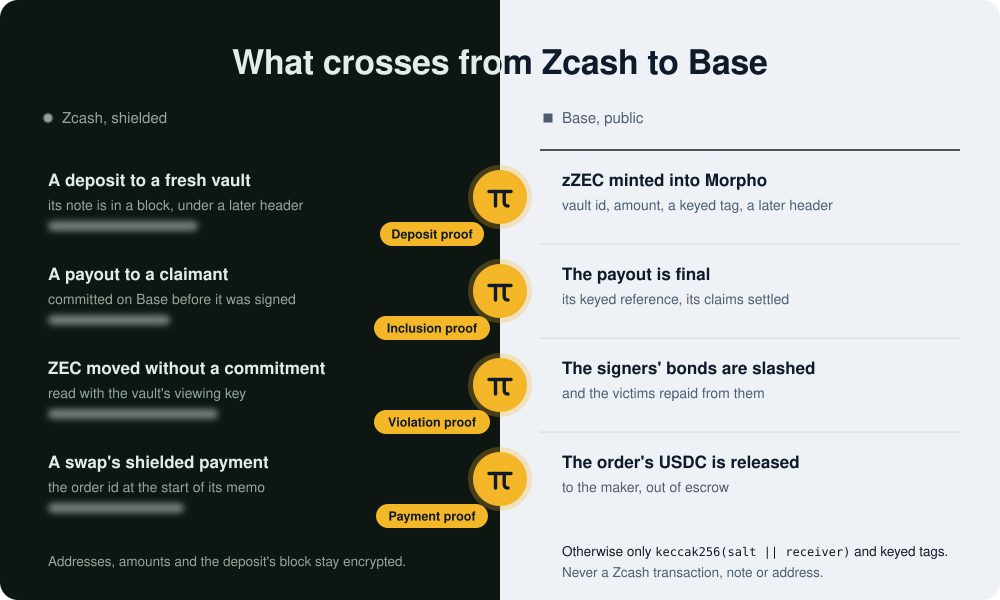

ZECATHON 2026 Cross-Chain track testnet
Borrow against shielded ZEC. Only the proof crosses.
Your ZEC never leaves Ironwood, Zcash’s newest shielded pool. Borrow USDC on Base against it, or swap USDC into shielded ZEC. Base sees zero-knowledge proofs, never your Zcash address, transaction or balance.
A guided replay of our live run, in your browser. No wallet, nothing to install.
Ran live on Zcash testnet and Base Sepolia on 27 October 2026, every proof checked by RISC Zero’s deployed verifier.
01 Deposit
Pay a vault no one holds alone.
Five signers create a fresh 3-of-5 FROST vault for your loan. You pay it from Ironwood like any shielded payment: no amount and no address go public.
- Zcash an encrypted payment
- Base nothing at all
On testnet we run all five signers, so their bonds show the mechanism, not independent security; mainnet needs five independent operators. Who you trust
02 Prove
Base checks Zcash itself.
Base verifies Zcash’s block headers and their proof of work on its own. A zero-knowledge proof then shows your deposit is in one of those blocks, without saying which. zZEC, a collateral receipt nobody can transfer, is minted on that proof alone: no signer vouches for it.
- Zcash nothing new
- Base a vault id, a standard amount, a keyed tag
Together, the header relay and the proofs are a Zcash light client on Base: any contract can use them to check a shielded Zcash payment, without a bridge.

03 Borrow
Borrow from a brand-new account.
A fresh smart account borrows USDC on Morpho Blue against your zZEC. Its gas is sponsored, so it never holds ETH, and nothing on Base points back to your wallet.
Lenders on Morpho Blue supply the USDC and earn the interest, in a new market backed by Zcash collateral.
04 Close
Leave without unshielding.
Repay, or let a market maker repay for you out of your collateral. Your ZEC, or what is left of it, returns to a new Ironwood address, and every payout is recorded on Base before the signers sign it.
If ZEC falls too far, a liquidator repays part of the debt and is paid in shielded ZEC too, which even your viewing key cannot see; the rest stays yours. You can also opt in to gentler, earlier partial liquidations.
05 Swap
Buy shielded ZEC with USDC.
The same light client settles a swap. A market maker fills your order from its own ZEC and USDC, at a price it signs for you alone. Your USDC waits in escrow on Base until a zero-knowledge proof shows the maker paid your shielded address for that very order.
- Base the order and a salted hash, never your address
- Zcash a shielded payment to you
No liquidity pool, no bridge: anyone with ZEC and USDC can run a market maker. In the demo the market maker is ours and sets its price by hand (MOCK); on mainnet it would quote Chainlink’s ZEC/USD, checked against API3’s.
06 Privacy
A bridge leaves four links to you. Zecured leaves none of them.
Through a typical bridge
- your transparent address
- the amount that crossed
- a mint that matches the deposit
- the wallet that paid the gas
Through Zecured
- a proof, a vault id, a standard amount
- salted hashes, never an address
- a fresh account that never held ETH
- nothing that leads back to your wallet
Our leak scanner checks each deployment. In the last run, none of 302 Zcash identifiers from our own transactions (txids, note commitments, nullifiers, addresses, keys) appeared in its 77 events, 55 transactions’ calldata or 177 storage words.
07 Trust
We let three signers steal.
On a separate DEMO deployment, three of five signers swept a vault. The borrower’s watchtower caught it two minutes later; a zero-knowledge proof of the theft slashed all five bonds (FROST hides which three signed), and the victim was made whole.
from 3 to 12.65 USDCthe victim’s account, before and after
From the 3 USDC it had borrowed to 12.65 USDC, once the slashed bonds repaid its debt and paid out its equity: the full value of its stolen 0.01 ZEC at the demo’s price of $1,265. On that fork a MOCK verifier checked the proof; a real violation proof passes RISC Zero’s verifier in our fork tests. The whole timeline
Every number is a run you can repeat.
- 804 contract tests pass
- 4 of 4kinds of real zero-knowledge proof (deposit, payout, theft, swap) pass RISC Zero’s verifier on Base forks; three of them live on Base Sepolia
- 0of 302 Zcash identifiers found on Base, on our forks
- 28.1 seconds: a deposit’s proof on one GPU, before its Groth16 wrap
All of it on Zcash testnet, Base Sepolia (live, 27 October), local forks of Base Sepolia and Base mainnet, and a rented GPU. The evidence
See it run.
Four minutes, recorded in our live run of 27 October on Zcash testnet and Base Sepolia: a loan opened in the browser, its deposit proven on Base, USDC borrowed from a brand-new account, a close from collateral, and a swap into shielded ZEC.
Or click through it yourself: the app replays that run in your browser (DEMO), each step linked to its real transaction. The replay stands in for the signers, the prover and the chains, which are not kept running through judging.
Everything, in detail.
- How a loan worksFive steps, seen from both chains
- What Base seesAnd what a bridge would show
- The swapEscrow released by a proof
- Who you trustSigners, bonds and the theft demo
- EvidenceTests and testnet transactions
- A judge’s questionsMultisig, bridge, time and cost
- Toward mainnetWhat changes, and what can’t be coded
- A draft ZIPShielded Collateral Vaults, for any wallet or chain
Borrow against shielded ZEC. Only the proof crosses.